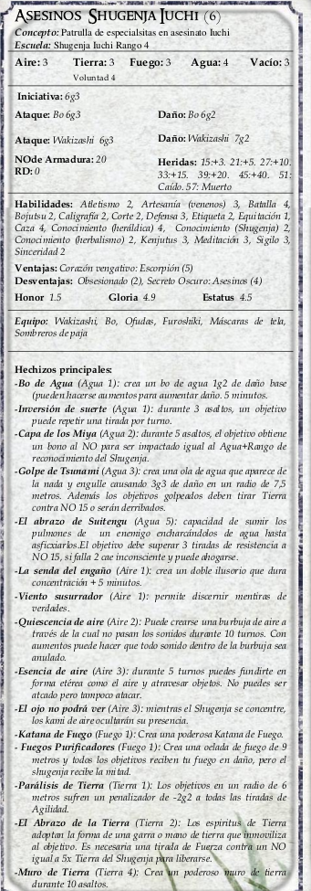

|  | Seis shugenja salen abruptamente de la tierra bajo sus pies, uno cada vez, utilizando el hechizo del “Abrazo de Kenro-ji-jin”. Llevan
sombreros con forma de cesto, máscaras, y van adornados con varios amuletos menores que retuercen, mantienen, o leen con el fin de
lanzar un hechizo. Uno de ellos hace un ajuste, y el viento es silenciado. No hay sonido que escape. Katanas de fuego prenden desde sus manos, rugiendo como las llamas de un soplete. Quieren a Himeko con vida. El resto del grupo sólo son obstáculos La lucha debe ser aterradora y desordenada. Dentro de la burbuja, la furia de los elementos gotea a través de los paneles de papel, haciendo hervir las aguas del baño de la casa, y prendiendo fuego al tatami. Los shugenja utilizarán “las murallas de Tierra” para evitar que los personajes puedan ayudarse los unos a los otros, usarán conjuros debilitadores como el abrazo de Tierra para hacer su escuadrón de “Katanas de Fuego” casi invulnerable, y son un buen ejemplo de la temible eficacia de un grupo de combate capacitado mágicamente. En cualquier momento, por lo menos tres tendrán “Katana de fuego” activado, mientras que los otros ayudan con magia de apoyo aislando a los Pj, manteniéndolos en su lugar, o volviéndoles locos. No te olvides de añadir el Rango de Escuela en dados a todos los DR de sus hechizos. |